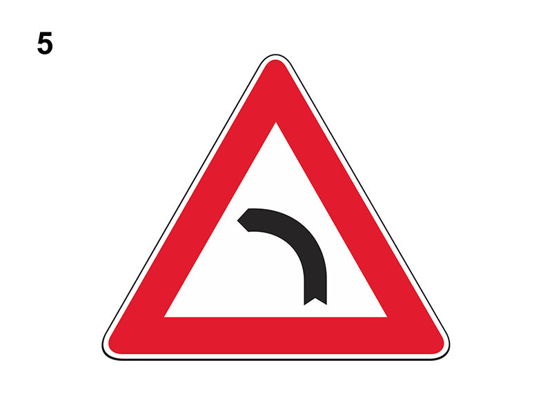

Curva pericolosa a sinistra

E' un segnale di pericolo che preannuncia (di norma a 150 metri) una curva pericolosa a sinistra, ossia un tratto di strada non rettilineo pericoloso per ridotta visibilità.
Può essere integrato con pannello con la scritta TORNANTE.
In presenza del segnale:
Può essere integrato con pannello con la scritta TORNANTE.
In presenza del segnale:
- è opportuno fare particolare attenzione ai veicoli provenienti dal senso opposto
- se posto su strada a doppio senso di circolazione e con due sole corsie, si deve circolare il più possibile vicino al margine destro
- è necessario regolare la velocità in relazione alla visibilità, al raggio della curva per potersi arrestare in caso di un ostacolo improvviso
- è necessario regolare la velocità in relazione alle condizioni di carico del veicolo
- è necessario percorrere la curva con più attenzione se la strada è bagnata
- non è consentito effettuare fermata, sosta, manovre di retromarcia, inversione di marcia
- non è consentito il sorpasso se la carreggiata è a doppio senso di circolazione e con due sole corsie (neanche se non si supera la striscia bianca ad esempio per sorpassare un motociclo)
- si deve viaggiare ad andatura particolarmente moderata se si circola con il ruotino (ruota di soccorso)